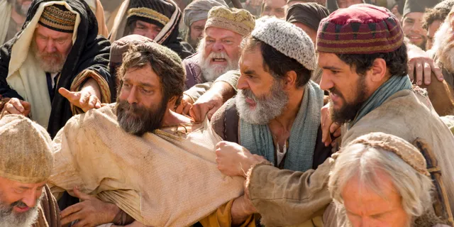
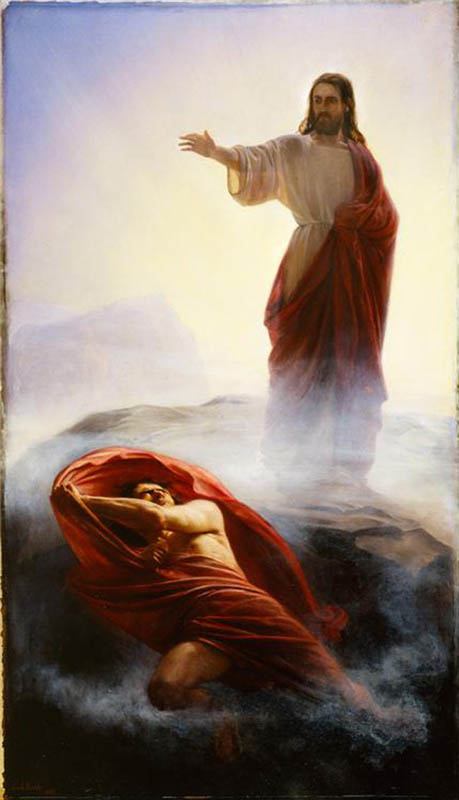
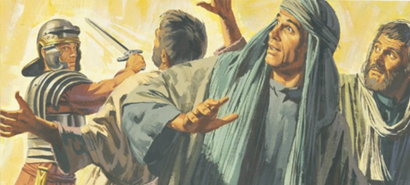

Overview
The Great Apostasy refers to the period of spiritual darkness and loss of the divine authorite that happened right after the death of Jesus Christ's original Apostles. This concept is foundational to the teachings of the LDS Church, and provides the historical explanation for the need for the Restoration of the Gospel.
Historical Context
The term "apostasy" derives from the Greek word apostasia, which means "to deflect" or "revolt".
Following Christ's ministry and atoning sacrifice, his apostles were tasked with leading his church and spreading his word and his teachings. However, after their deaths, the church experienced a pretty significant doctrinal corruption, resulting in loss of priesthood authority, and fragmentation. This marked the beginning of what is often referred to as the Great Apostacy.
The New Testament provides evidence of the challenges and problems the early church ran into after the death of Christ. Apostles like Paul warned us againts the false teachings and apostasy. In 2 Thessalonians 2:3, Paul wrote: "Let no man deceive you by any means: for that day shall not come, except there come a falling away first, and that man of sin be revealed, the son of perdition." This "falling away" was interpreted by the Latter-day Saints as a prophecy of the Great Apostacy.
Doctrinal Corruption
Over time, early Christianity became increasingly influenced by the philosophies of men and politics. As church leaders sought to align what they did with political powers (such as the Roman Empire), theological debates led to the creation of what we now call "mainstream Christianity".
One of the most significant events was the Council of Nicaea in 325 AD. Led by Emperor Constantine, the council sought to resolve some disputes about the nature of Christ and his relationship to God and the Holy Spirit. While it succeeded in creating a unified doctrine for people, it can also be seen as the evidence of human intervention into the doctrine.
In addition to the human intervention into the doctrine, practices such as infant baptisms, veneration of saints, celibacy of clergy and other new practices marked a departure from original teachings of Jesus Christ.
Events and Locations of the Great Apostasy
The Great Apostasy was not just a single event, but rather a gradual process. Key locations and events include:
-
The Martyrdom of the Apostles:
The deaths of Peter, Paul, and other Apostles during the 1st century left the Church without divinely appointed leaders.
-
Constantine’s Adoption of Christianity:
The Edict of Milan (313 AD) legalized Christianity, but the blending of Roman practices with Christian traditions led to further doctrinal changes.
-
The East-West Schism:
In 1054 AD, the Christian Church split into the Roman Catholic and Eastern Orthodox traditions. This division further worsened the fragmentation within Christianity.
Scriptural Connections
In addition to Paul's writings, other scripture teachings support the Great Apostasy. For example, Amos 8:11-12 says:
"Behold, the days come, saith the Lord God, that I will send a famine in the land, not a famine of bread, nor a thirst for water, but of hearing the words of the Lord: And they shall wander from sea to sea, and from the north even to the east, they shall run to and fro to seek the word of the Lord, and shall not find it."Restoration Through the Prophet Joseph Smith
The Great Apostasy set the stage for the Restoration of the Gospel through the prophet Joseph Smith. In 1820, during the First Vision, Joseph Smith was visited by God the Father and Jesus Christ, who informed him that the fullness of the Gospel was not present on the earth.
In subsequent years, heavenly messengers, including John the Baptist and Peter, James, and John, restored the priesthood authority. This restoration marked the end of the Great Apostasy and the beginning of the dispensation of the fullness of times.
Conclusion
The Great Apostasy is a pivotal doctrine that explains the loss of priesthood authority, the doctrinal corruption of early Christianity, and the fragmentation of Christ’s original church. Its impact was profound, creating a spiritual void that could only be filled through divine intervention. The Restoration of the Gospel, as taught by the LDS chrch, is the fulfillment of ancient prophecies and a testament to God’s continuous involvement in the salvation of his children.